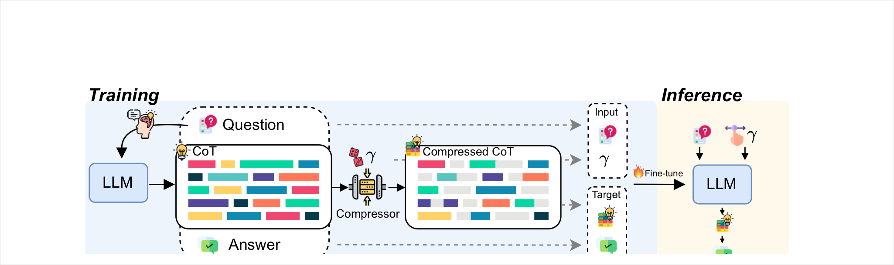
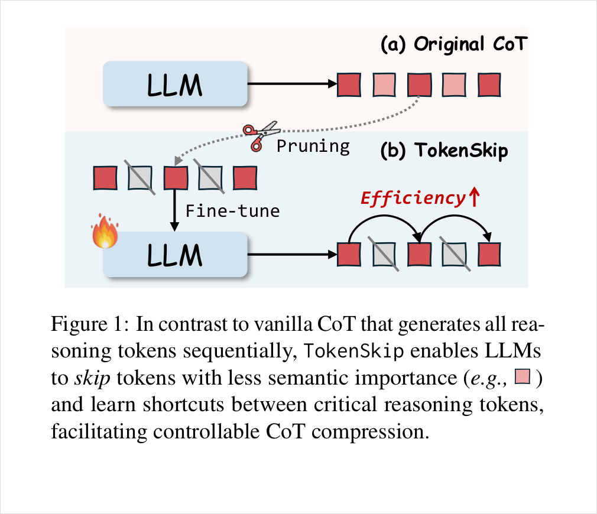
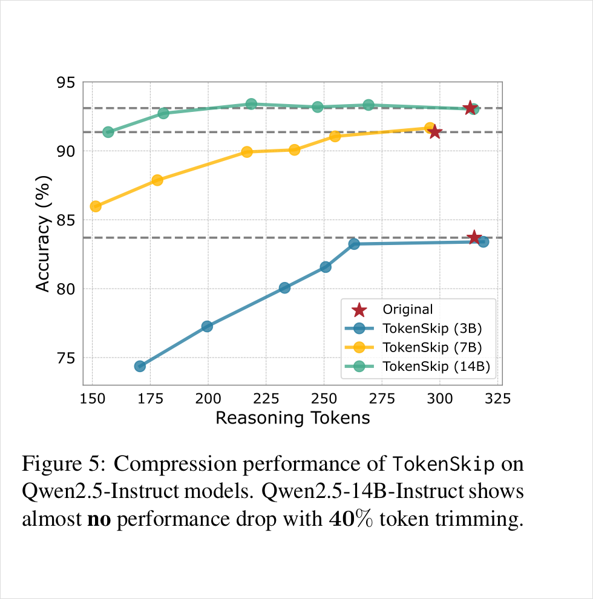
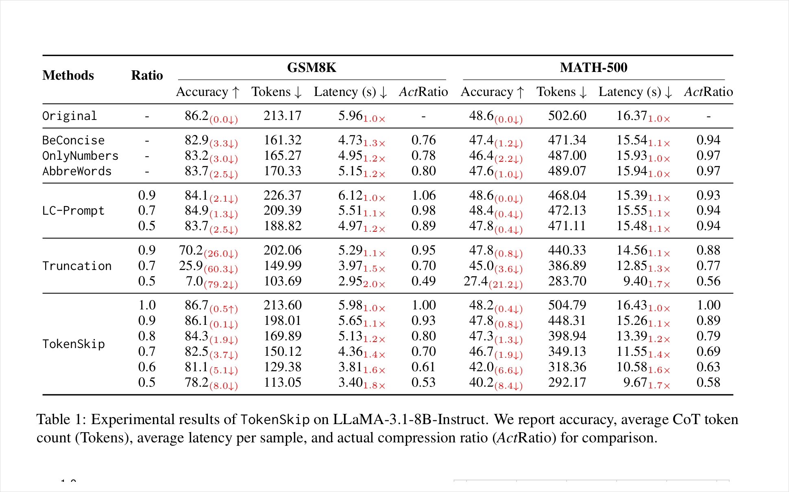
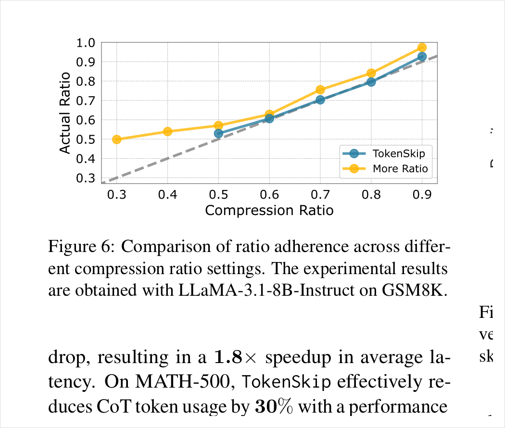
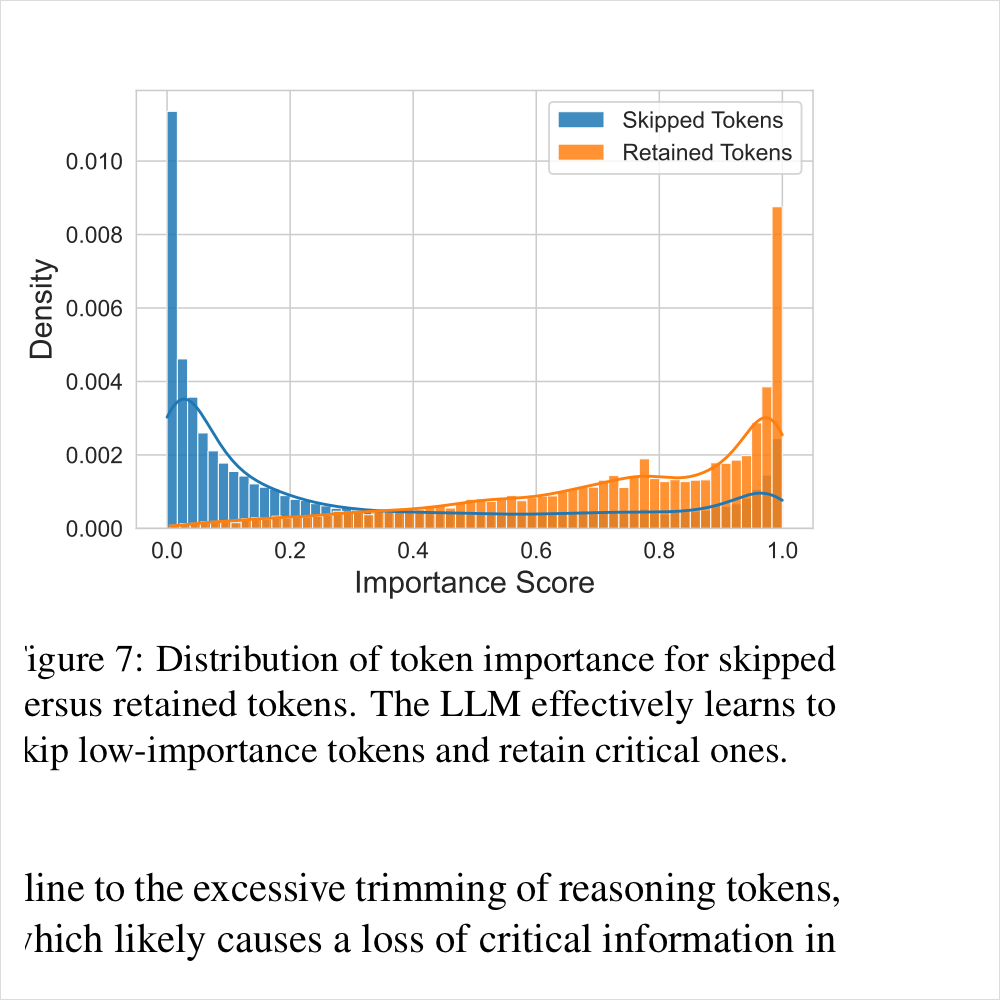
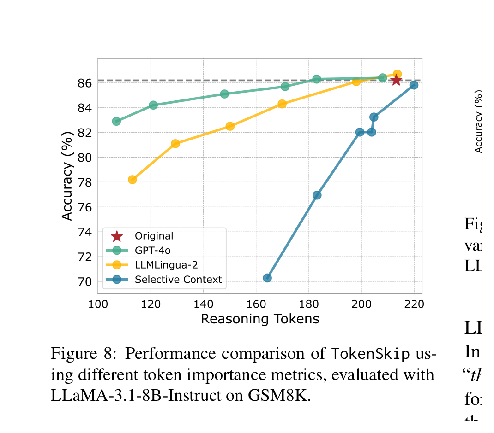
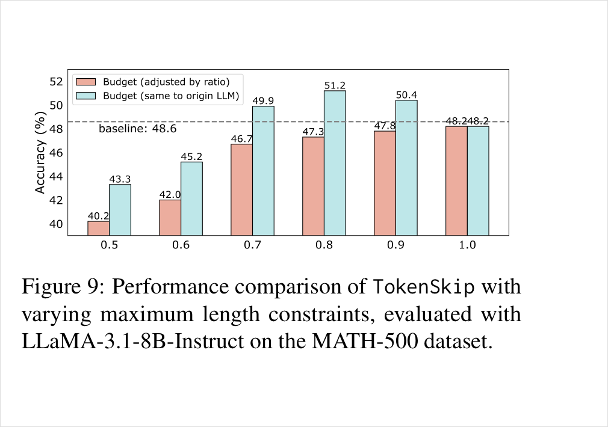
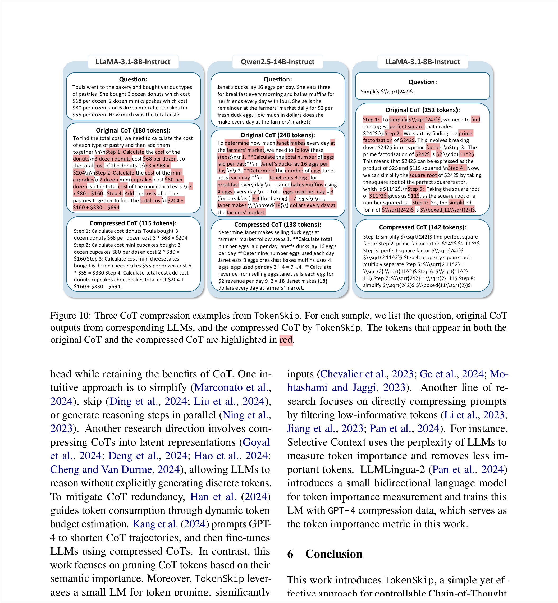

TokenSkip：训练模型生成更短但仍可控的推理链
长 CoT 能提升复杂推理，但自回归模型必须一个 token 一个 token 地生成，推理越长，延迟和 KV cache 成本越高。 TokenSkip 的核心想法是：不要简单要求模型“说短点”，也不要硬截断输出，而是先找出 CoT 里真正承载推理的 token， 用这些压缩轨迹微调模型，让它在推理时按给定压缩率 γ 自动生成更短、更高密度的 CoT。
TokenSkip 的贡献：把“少生成 CoT”从提示词愿望变成可训练能力
如果只用一句话概括：TokenSkip 认为 CoT 中有一部分 token 是“推理承重结构”，另一部分只是自然语言胶水； 它先从目标模型自己的正确 CoT 中剪出高重要性 token，构造不同压缩率的训练数据，再把压缩率 γ 作为条件输入微调模型， 让模型学会在推理时主动跳过低价值 token，而不是事后把输出砍短。
这篇论文的关键不是“CoT 可以压缩”这个结论本身，而是给了一个可复现的训练路径：目标 LLM 生成正确 CoT → 重要性模型剪枝 → 混合 γ 的 SFT → 推理时按 γ 控制输出长度。实验显示，这条路径比 “Be concise” 这类 prompt 更能贴近目标压缩率， 又比 hard truncation 更不容易砍断推理链。
论文真正问的问题：能不能少生成 token，但不破坏推理链？
这篇论文的出发点不是“CoT 太长所以不要 CoT”，而是一个更细的问题：如果长推理确实有用，那么能否把 CoT 中真正必要的推理信息保留下来， 同时减少那些对答案贡献较小、但仍要消耗生成时间的 token？
为什么“请简洁点”和“直接截断”都不是理想答案
Prompt 路线的问题是不可控：模型可能理解“要短”，但未必短到目标比例；论文 Table 1 中 LC-Prompt 目标设为 0.5， 在 GSM8K 的实际压缩率仍是 0.89，在 MATH-500 上仍是 0.94。也就是说，它更像改变语气，而不是精确控制长度。
截断路线的问题是破坏结构：CoT 是自回归生成出来的，答案常常在尾部。如果只限制最大输出长度，最容易砍掉最后的计算和最终答案。 论文 Table 1 中 Truncation 在 GSM8K 的 0.5 ratio 下准确率从 86.2 跌到 7.0，这说明“短”本身没有意义，关键是保留哪些 token。
TokenSkip 因此把问题改写为：不是让模型少想几步，而是让每一步用更高密度的符号和关键词表达。 Figure 2 给了这个假设的直观证据：同一条 CoT 中，数字、方程和关键实体关系通常更深色，也就是重要性更高；连接词和模板式自然语言往往更浅。
这段示意对应论文 Figure 2：如果问题是年龄推理，真正决定答案的是 “Deanna=26”“26-5=21”“Leo=2×Marcus”“42” 这些关系； “Let’s break it down” 这类开场白可以帮助人读，但对算出答案的贡献较弱。
TokenSkip 怎么做：把“压缩 CoT”做成一种可学习的输出格式
先抓住最重要的一点：TokenSkip 不是在模型生成完整 CoT 之后再做后处理，而是在训练阶段把“压缩后的 CoT 长什么样” 教给模型。Figure 4 是整篇论文的方法地图，可以从左到右读：生成原始正确 CoT → 压缩器剪枝 → 带 γ 微调 → 推理时直接输出压缩 CoT。

先得到目标模型自己的正确推理
训练样本不是人工重写的短推理，而是目标 LLM 对训练题生成的原始 CoT；只保留答对的轨迹，避免压缩错误推理。
再把原始 CoT 压成不同 γ
压缩器不是随便删词，而是根据 token importance 保留高价值 token，构造 0.5 到 1.0 不同压缩率的训练目标。
最后让模型学会按 γ 直接输出
推理时输入问题和目标 γ，模型不再先生成长 CoT 再被压缩，而是直接生成压缩 CoT 和答案。

Figure 1 的真正含义
上半部分的 vanilla CoT 是普通自回归生成：即使某些 token 只是连接词或模板话，也必须顺序生成。 下半部分的 TokenSkip 不是把整段推理砍掉，而是先在训练数据中删去低重要性 token，再微调模型，让它学会从一个关键 token 直接过渡到下一个关键 token。
所以 TokenSkip 的目标不是“少推理”，而是“把推理表达压缩成更密集的语言”。这也解释了为什么 Figure 10 的案例里， 数字和公式大多保留下来，但自然语言连接变短。
Prompt 只能请求“短一点”，无法稳定落到指定压缩率。
截断会从尾部砍掉还没生成的计算或答案，尤其伤害 GSM8K。
把 γ 和压缩 CoT 一起放进训练，使压缩成为模型学到的输出分布。
生成并过滤 CoT 轨迹
给定训练集 \(D=\{(x,a)\}\) 和目标模型 \(M\)，作者先让 \(M\) 对每道题生成一条完整 CoT \(c\) 和最终答案。 只有答案正确的样本会进入下一步。这个过滤很关键：TokenSkip 想学的是“如何压缩正确推理”，不是把错误推理也压缩得更短。
这一步也让方法保持低成本：训练目标主要来自目标模型自己的输出，像一种自蒸馏；论文没有要求人工逐条标注压缩 CoT。
用重要性模型给 token 排序
压缩器要回答一个局部问题：一条 CoT 里的每个 token 到底有多重要？论文对比了两类重要性度量。 Selective Context 用因果 LLM 的困惑度衡量 token 置信度，但它容易受位置影响，句子后部 token 往往更容易预测； TokenSkip 最终采用 LLMLingua-2 的双向 BERT-like 分类器，让模型同时看到左右文，再判断 token 是否重要。
这里 \(I_1\) 是 Selective Context 的困惑度式重要性；\(I_2\) 表示 LLMLingua-2 判断 token \(x_i\) “应被保留”的概率。论文 Eq.(2) 写成 \(P(x_i \mid x_{\le n};\theta_{M_B})\)，语义上就是双向分类器输出的重要性概率。
按 γ 保留高重要性 token
现在有了一条 CoT \(c=\{c_i\}_{i=1}^{m}\) 和每个 token 的重要性 \(I(c_i)\)。 γ 可以理解为目标保留比例：γ 越小，训练目标越短；γ=1.0 时保留原始 CoT。实现上，TokenSkip 选择一个阈值 \(I_\gamma\)， 让高于阈值的 token 被保留下来，得到压缩轨迹 \(\tilde c\)。
读这两个式子时不要只看符号：它的思想是“用重要性阈值控制输出密度”。模型最后学到的不是删词规则本身， 而是这种压缩后 CoT 的语言形态。
多压缩率 SFT，答案段不压缩
训练样本里，问题后面会显式插入压缩率 γ：Q [EOS] γ [EOS] compressed CoT + A。
这一步是“可控”的来源：模型不是被训练成永远短，而是学会不同 γ 对应不同输出密度。
论文还保留一部分 γ=1.0 的原始 CoT，避免模型忘掉完整推理格式。
另一个细节是：TokenSkip 只压缩 CoT，不压缩最终答案 \(a\)。这很合理，因为答案段承担评测和用户可见输出， 如果把答案也剪掉，压缩就会和任务正确性直接冲突。
这就是常规 next-token SFT，只是训练目标从“完整 CoT + 答案”换成“压缩 CoT + 答案”，并把 γ 作为条件输入。
推理时输入目标 γ
推理阶段没有额外压缩器参与。用户给出问题和想要的 γ，模型按普通自回归方式生成 \(\hat y=\hat c\oplus \hat a\)。 这也是 TokenSkip 和“先生成再压缩”的根本区别：节省 token 的收益发生在生成过程中，而不是生成之后。
实验读法：TokenSkip 最强的证据不是“短”，而是“短得可控”
作者主要在 GSM8K 和 MATH-500 上评估 LLaMA-3.1-8B-Instruct 与 Qwen2.5-Instruct 系列。 指标包括准确率、平均 CoT token 数、单样本推理延迟和实际压缩率。

Qwen2.5-14B 的关键结果
在 GSM8K 上，原始 Qwen2.5-14B-Instruct 为 93.1% 准确率、313.11 个平均 CoT token。 γ=0.6 时，TokenSkip 为 92.7%、180.68 token，实际比例 0.57；这对应约 40% token 减少，准确率只降 0.4 个百分点。
LLaMA-3.1-8B：和 prompt / truncation 的对照
| 方法 | Ratio | GSM8K Acc | GSM8K Tokens | GSM8K Latency | GSM8K ActRatio | MATH-500 Acc | MATH Tokens | MATH Latency | MATH ActRatio |
|---|---|---|---|---|---|---|---|---|---|
| Original | - | 86.2 | 213.17 | 5.96s | 1.00 | 48.6 | 502.60 | 16.37s | 1.00 |
| BeConcise | - | 82.9 | 161.32 | 4.73s | 0.76 | 47.4 | 471.34 | 15.54s | 0.94 |
| LC-Prompt | 0.5 | 83.7 | 188.82 | 4.97s | 0.89 | 47.8 | 471.11 | 15.48s | 0.94 |
| Truncation | 0.5 | 7.0 | 103.69 | 2.95s | 0.49 | 27.4 | 283.70 | 9.40s | 0.56 |
| TokenSkip | 0.7 | 82.5 | 150.12 | 4.36s | 0.70 | 46.7 | 349.13 | 11.55s | 0.69 |
| TokenSkip | 0.5 | 78.2 | 113.05 | 3.40s | 0.53 | 40.2 | 292.17 | 9.67s | 0.58 |
读表重点：LC-Prompt 看起来保精度，但几乎没有达到目标压缩率；Truncation 能短，但在 GSM8K 上 0.5 ratio 准确率跌到 7.0%。 TokenSkip 的价值在二者之间：牺牲较小精度，换来真正接近目标的压缩率和延迟加速。

为什么它有效：模型学到的是“保留关键关系”，不是机械缩句



1. 压缩率有“可学习区间”
论文主实验只覆盖 γ≥0.5，补充实验把 0.3、0.4 加入训练后，实际比例反而更不稳定。 一个合理解释是：压得太狠会丢掉训练所需的关键语义，模型看不到足够完整的捷径样本，自然学不稳。
这说明 TokenSkip 的可控性不是无限的。它更适合把冗余语言压掉，而不是把复杂推理压成几串数字。
2. 重要性模型决定上限
LLMLingua-2 是一个成本友好的选择，但它不是数学专用模型。论文 Figure 8 中 GPT-4o 压缩数据的表现更好， 暗示如果未来能训练数学/代码/科学推理专用的重要性估计器，TokenSkip 的上限还会提高。

这张图很关键
Figure 9 表明 TokenSkip 不只是“同样答案更短”。在相同 max_len 下，压缩 CoT 格式可能让模型把预算花在更多有效推理上， 而不是自然语言填充上。论文报告 γ=0.7、0.8、0.9 相比原模型有 1.3 到 2.6 个百分点的绝对提升。
但这也要谨慎解读：如果把目标改成纯准确率最大化，为什么 γ=1.0 不总是最佳？这里可能混合了 length budget、训练正则化和输出格式变化的影响。
案例：TokenSkip 更像“压缩语言”，不是砍掉步骤
To find the total cost, we need to calculate the cost of each type of pastry and then add them together. Step 1: Calculate the cost of the donuts. 3 × $68 = $204. Step 2: Calculate mini cupcakes. 2 × $80 = $160. Step 3: Calculate cheesecakes. 6 × $55 = $330. Step 4: $204 + $160 + $330 = $694.
Step 1 calculate cost donuts 3 dozen $68 per dozen 3 * $68 = $204. Step 2 mini cupcakes 2 * $80 = $160. Step 3 mini cheesecakes 6 * $55 = $330. Step 4 total $204 + $160 + $330 = $694.

我的判断：这是一篇实用主义很强的工作，但真正难题还在长 CoT 场景
我认为最强的贡献
TokenSkip 把 CoT 压缩做成了一个可训练、可控、低成本流程。它不依赖昂贵 API 逐条压缩测试输出， 也不要求改变模型架构；LoRA + 小型 importance model 足以构造有效训练信号。
为什么比 prompt 更可信
Prompt 控长度时，模型常常“知道你想短”但不会稳定短到目标比例；LC-Prompt 在目标 0.5 时实际比例仍高于 0.89。 TokenSkip 直接用 γ 条件训练输出分布，因此 ratio adherence 更好。
主要局限 1：没有覆盖真正长 CoT 模型
论文动机提到超过 10,000 token 的 CoT 成本，但实验主要是 GSM8K/MATH-500，平均 CoT 多在几百 token。 作者也承认未测试 QwQ-32B-Preview 等 long-CoT 模型，以及 Qwen2.5-32B/72B。
主要局限 2：重要性估计器不是数学专用
LLMLingua-2 不是为数学符号、数值依赖和公式变形训练的。它能工作，但可能漏判一些看起来普通、实际关键的 token。 对数学和代码推理而言，importance metric 可能是后续提升的最大杠杆。
需要进一步验证的问题
压缩后的 CoT 可恢复性目前主要以案例展示，缺少大规模的 fidelity 指标；同时，压缩输出的可读性下降， 如果用户需要审计推理过程，是否需要自动恢复模块仍未充分评估。
部署侧的真实收益还要看 serving 设置
论文报告 batch size 1、单张 3090 的 latency。真实线上系统还会受到 batching、KV cache、采样策略和 tokenizer 的影响。 Token 数减少通常会带来收益，但吞吐和端到端延迟需要在生产形态下复测。
读完这篇论文，应带走四个结论
1. CoT 冗余确实存在
数字、公式和实体关系更像“承重墙”；连接词、模板化解释和重复叙述更像“装修层”。 TokenSkip 的实验说明，至少在中等长度数学 CoT 中，后者可以大量减少。
2. 可控性来自训练，不来自请求模型自觉
把 γ 写入训练样本，比在 prompt 里说“减少 50%”可靠得多。 这也是 TokenSkip 相比 token-efficient prompts 的核心优势。
3. 大模型更适合学 token-level shortcut
Qwen2.5-14B 在 γ=0.6 仍几乎不掉点，3B 则明显更吃力。 这符合直觉：越强的模型越能从残缺但关键的符号链中补全推理语义。
4. 下一步应走向长推理和领域重要性模型
如果 TokenSkip 能在 R1/QwQ 类长 CoT、代码推理、多步科学推理上稳定工作，它的实际价值会更大。 专用 importance model 可能比继续调 prompt 更值得投入。
补充实验给出的泛化信号
| 场景 | 模型/训练 | 关键设置 | 论文报告的现象 |
|---|---|---|---|
| MATH → GSM8K | LLaMA-3.1-8B on MATH | OOD math word problems | 实际比例仍接近目标，但 γ=0.5 时 GSM8K 准确率下降 9.6 个百分点。 |
| MATH → MMLU-STEM | LLaMA-3.1-8B on MATH | STEM 多选题 | γ=0.6 时准确率 59.2，高于原始 58.5；γ=0.5 也仅低 0.4 个百分点。 |
| CommonsenseQA | Qwen2.5-7B/14B | 常识问答 | 50% CoT token 压缩未造成性能下降；Qwen2.5-14B 在 γ=0.5 时仍为 82.1。 |